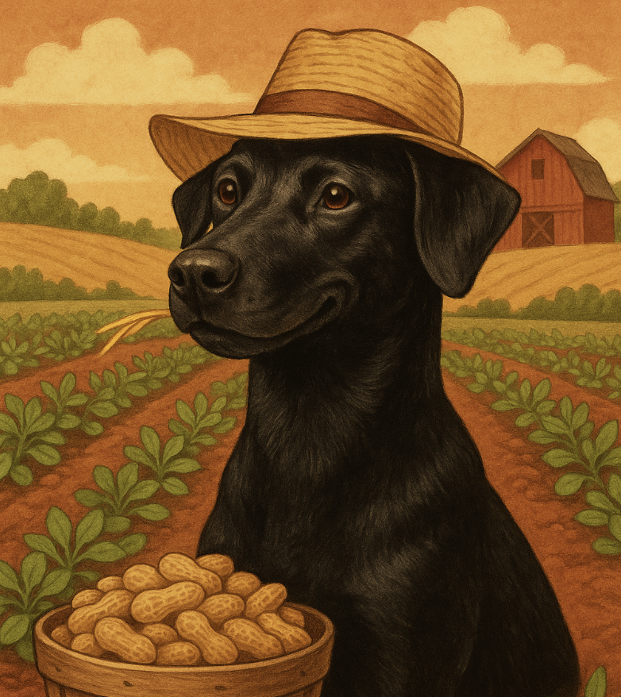
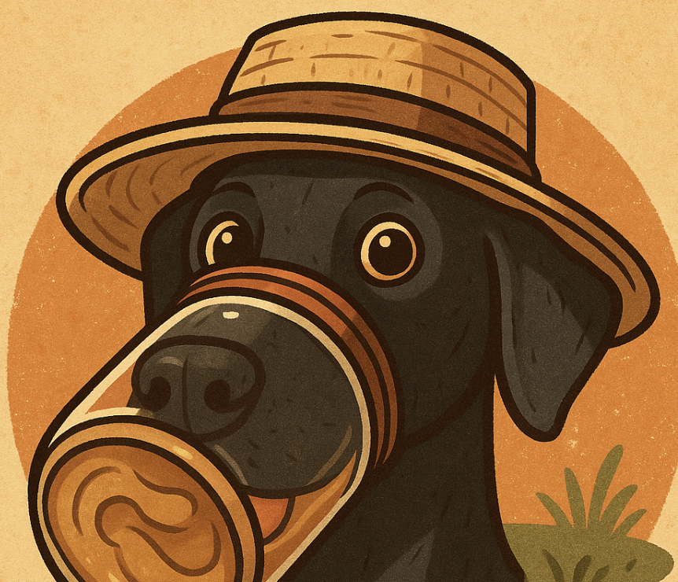
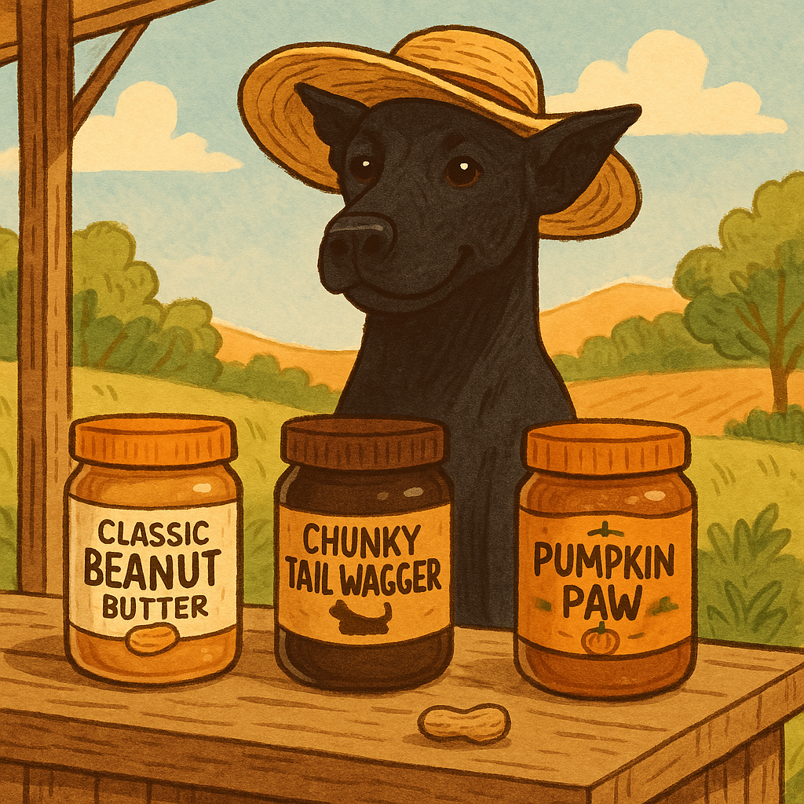
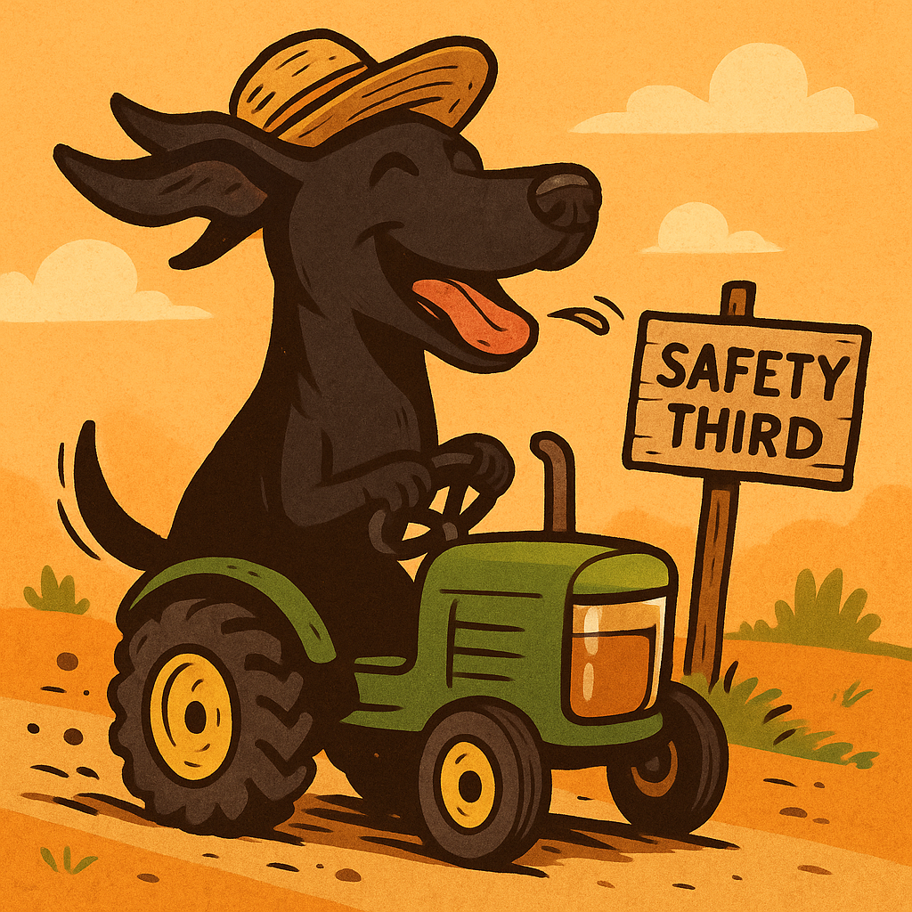

Welcome to the Farm! 🚜
One lick and you'll be barkin' for more 🐾. Handmade (er... pawmade?) peanut butter with that authentic tail-wagging flavor 🧈.
Who is Bean? 🐶
Bean is a black doberman mix with a dream: to farm peanuts 🌱, churn butter 🧈, and spread joy (and maybe slobber) across the land 🐕. When she's not snoozin' in a sunbeam ☀️ or chasin' butterflies 🦋, she's head of R&D: Refining Deliciousness.
Our Products 🧺
- Classic Beanut Butter – Smooth, nutty, and slightly drooly 🤤.
- Chunky Tail Wagger – For dogs who like a little crunch with their munch 🦴.
- Limited Edition: Pumpkin Paw – Fall vibes in every scoop 🎃🍂!
*All products are imaginary. But the love is real ❤️.
Follow Bean's Adventures 📸
See the farm. See the dog. See the chaos 🤪.
👉 @beanmyfriend 🐾
